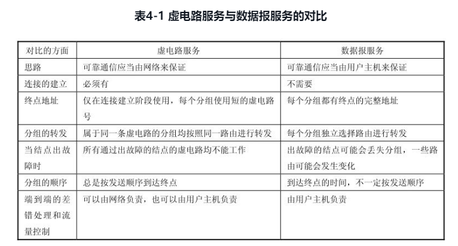

网络层
本章重点
- 虚拟互联网络
- IP地址和物理地址的关系
- 传统的分类的IP地址（包括子网掩码）和无分类域间路由选择CIDR
- 路由选择协议的工作原理
网络层提供的两种服务
虚电路服务（电话，电信）
- 面向连接
- 通信双方先简历连接（一条虚电路）
- 分组中保存虚电路编号即可
- 无差错，无错序，不丢失，不重复
- 结束后释放虚电路
数据报服务
- 网络层向上只提供简单灵活、无连接、尽可能交付的数据报服务
- 硬件简单
- 可能出错，丢失，重复，失序
- 由上层进行差错校验

网际协议IP配套协议
- 地址解析协议ARP
- 网际报文控制协议ICMP
- 网际组管理协议IGMP
IP协议使用ARP协议，ICMP协议和IGMP协议使用IP协议
虚拟互联网络
网络连接的中间设备
- 物理层的转发器（扩大一个网络）
- 数据链路层的网桥或桥接器（扩大一个网络）
- 网络层的路由器
- 网络层以上的网关
虚拟互联网络含义
- 利用路由器和IP协议将网络在逻辑上连接在一起形成大的同意逻辑网络，就是虚拟互联网，也叫IP网

IP地址的编址方式
分类的IP地址
- 格式（已成历史）
- 类型号 网络号 主机号 共32位

- 类型号 网络号 主机号 共32位
- 特殊网络号：全0 表示本网络；全1 表示本机软件测试的网络号，不发送到网络
- 特殊主机号：全0 表示所在网络；全1 表示所在网络的所有主机

- 互联网IP地址举例

子网的划分
将一个网络划分为多个子网，使其成为不同的网络
- 格式
- 网络号 子网号 主机号
- 子网掩码
- 为路由器寻找具体主机提供支持
- A类地址的默认子网掩码是255.0.0.0，或0xFF000000；
- B类地址的默认子网掩码是255.255.0.0，或0xFFFF0000；
- C类地址的默认子网掩码是255.255.255.0，或0xFFFFFF00。
- ip地址与子网掩码的结果为所在子网地址
- 划分子网
- A类划分子网可以用子网掩码（子网个数为2^子网号1个数-2，主机数为2^主机数-2）
- 01111111.10000000.0000000.00000000
- 01111111.11000000.0000000.00000000
- 01111111.11100000.0000000.00000000
...
- B类划分子网可以用子网掩码（子网个数为2^子网号1个数-2，主机数为2^主机数-2）
- 01111111.11111111.10000000.00000000
- 01111111.11111111.11000000.00000000
- 01111111.11111111.11100000.00000000
...
- C类划分子网可以用子网掩码（子网个数为2^子网号1个数-2，主机数为2^主机数-2）
- 01111111.11111111.11111111.10000000
- 01111111.11111111.11111111.11000000
- 01111111.11111111.11111111.11100000
...
- A类划分子网可以用子网掩码（子网个数为2^子网号1个数-2，主机数为2^主机数-2）
无分类域间路由选择CIDR构成超网
- 格式
- 网络前缀 主机号
- CIDR还使用“斜线记法”(slash notation)，或称为CIDR记法，即在IP地址后面加上斜线“/”，然后写上网络前缀所占的位数。128.14.35.7/20 = 10000000000011100010001100000111
IP地址与硬件地址
- 硬件地址：常用MAC地址等价，用在数据链路层和物理层
- IP地址：用在网络层及更高层
数据传输中IP地址和MAC地址的作用
- 数据链路层传输的帧为MAC帧，帧首部写入的是目标的MAC地址。
- 网络层得到的数据为去掉首部和尾部的MAC帧——IP数据报。
- 发送方发送MAC帧，根据MAC地址到达指定路由器，路由器去掉MAC帧头部和尾部，将IP数据报上传给网络层，网络层拿到目标ip地址，查找表得到目标MAC，封装成MAC帧，传递给下一个节点，直至传至目标节点
地址解析协议ARP
- 使主机或路由器知道应当在MAC帧的首部填入什么样的硬件地址？、
- 地址解析协议ARP解决这个问题的方法是在主机ARP高速缓存中应存放一个从IP地址到硬件地址的映射表，并且这个映射表还经常动态更新（新增或超时删除）。
ARP工作原理
- 发送方主机想给某ip发送数据时，先查本机ARP缓存中是否由此ip的映射表
- 如果有，则直接拿到MAC，将IP数据报打包成MAC帧，放入数据链路层
- 如果没有，则广播问一下，我ip是XXXX，MAC是XXXX，请问ip是XXXX的MAC是多少啊
- 非目标看到后，直接丢弃
- 目标看到，把发送方信息存入缓存，私信发送方主机，我的ip是XXXX，我的MAC是XXXX
- 发送方收到私信，存入ARP缓存，打包MAC帧，放入数据链路层
- 长时间没联系的话就删除缓存中的映射
- 如果不是同一局域网，就发给路由器，让路由器去找
IP数据报格式
- 首部（固定部分+可变部分）+数据部分
- 固定部分 常为20字节
| 字段 | 占位大小（位） | 作用 |
|---|---|---|
| 版本 | 4位 | 标记IP协议的版本，Ipv4/Ipv6 |
| 首部长度 | 4位 | 默认为0101 表示首部长度20字节 |
| 区分服务 | 8位 | 不常用 |
| 总长度 | 16位 | 首部+数据部分总长度个字节 |
| 标识 | 16位 | 用来标识拆分后的数据包属于同一组 |
| 标志 | 3位 | 最低位为1标示后边还有分片，为0标示是最后一片；中间位为1表示不能再分了 |
| 偏移量 | 13位 | 用于标志某一个分片数据属于原数据的相对位置（是相对原位置的字节数/8） |
| 生存时间 | 8位 | 表示数据报能在网络中被路由器转发的次数，转发一次就减1给下一个节点 |
| 协议 | 8位 | 表示使用ip数据报的协议类型 |
| 首部检验和 | 16位 | 用于检验头部数据得正确性 |
| 源地址 | 32位 | 本机ip |
| 目标地址 | 32位 | 目标ip |
- 可变部分
不常用
路由表，分组转发
使用分类的IP地址时的分组转发
（目的网络地址，下一跳地址）
(1) 从数据报的首部提取目的主机的IP地址D, 得出目的网络地址为N。
(2) 若N就是与此路由器直接相连的某个网络地址，则进行直接交付，不需要再经过其他的路由器，直接把数据报交付目的主机（这里包括把目的主机地址 D 转换为具体的硬件地址，把数据报封装为MAC帧，再发送此帧）；否则就是间接交付，执行(3)。
(3) 若路由表中有目的地址为D的特定主机路由，则把数据报传送给路由表中所指明的下一跳路由器；否则，执行(4)。
(4) 若路由表中有到达网络N的路由，则把数据报传送给路由表中所指明的下一跳路由器；否则，执行(5)。
(5) 若路由表中有一个默认路由，则把数据报传送给路由表中所指明的默认路由器；否则，执行(6)。
(6) 报告转发分组出错。
使用划分子网时的分组转发
（目的网络地址，子网掩码，下一跳地址）
(1) 从收到的数据报的首部提取目的IP地址D。
(2) 先判断是否为直接交付。对路由器直接相连的网络逐个进行检查：用各网络的子网掩码和 D 逐位相“与”（AND操作），看结果是否和相应的网络地址匹配。若匹配，则把分组进行直接交付（当然还需要把 D 转换成物理地址，把数据报封装成帧发送出去），转发任务结束。否则就是间接交付，执行(3)。
(3) 若路由表中有目的地址为D的特定主机路由，则把数据报传送给路由表中所指明的下一跳路由器；否则，执行(4)。
(4) 对路由表中的每一行（目的网络地址，子网掩码，下一跳地址），用其中的子网掩码和D逐位相“与”（AND操作），其结果为N。若N与该行的目的网络地址匹配，则把数据报传送给该行指明的下一跳路由器；否则，执行(5)。
(5) 若路由表中有一个默认路由，则把数据报传送给路由表中所指明的默认路由器；否则，执行(6)。
(6) 报告转发分组出错
使用无分类域间路由选择时的分组转发
(2) 路由器中的路由表是怎样得出的？